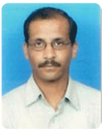

Dr. P.K. Padhi
Prof Padhi joined as a Principal in Utkal University Law College in 1994 after completing his LL.B.; LL.M. & Ph.D. in Law. In 2002 he resigned from Utkal University & joined with XLRI. In his credit he has published 8 books and published more than 25 articles in national & international journal and visited Dubai, Singapore, Paris, Malaysia, Israel, and Hong Kong for teaching and training assignment. Prof Padhi is a trainer for all most all PSUs namely—NTPC, NPCIL, IOL, DVC, ISRO, RBI, SBI, IOCL, Power Grid, GAIL, ONGC, HAL, NHPC. Prof Padhi conducts 5-Day Training Programme on Labour Laws for all Central Labour Commissioners since 2004. All most all ALC, RLC & Deputy CLC of Govt of India have visited XLRI and stayed for a week for the Training. He conducts open workshop in all metro city on Contract Management and Contract Labour Management. He also conducts training programme for Private Companies as well, like Reliance, Dr Reddy, L &T, Sandvik Asia, Microsoft, Accenture, Vodafone & Aircel etc. Prof Padhi provides consultancy in Labour Management, Labour Compliances, Contract and Contract Labour Management to many companies such as—Relaince; L&T, Godrej, GRSE, NPCIL, HZL, XL Health. Prof Padhi is also Advisor to HR Federation of India His area of interest: Labour Laws & Contract Management
Dr. E. M. Rao
M. A. (Social Work) (1969-71) with specialisation in Personnel Management, Labour Welfare, Industrial Relations and Labour Law from Andhra University, Visakhapatnam, India. He pursued his Ph. D. from the Tata Institute of Social Sciences, Bombay. Doctoral Thesis: “Industrial Adjudication on the Concept of Retrenchment – Its Nature and Impact on Industrial Relations” Professor – Personnel Management & Industrial Relations, & Chairperson – MDP & Consultancy, XLRI, Jamshedpur (Xavier Labour Relations Institute, Jamshedpur), one of the premier management institutes in India. (1997-date). He was the Dean (Academics), XLRI (2001- 04).

Dr. Shantanu Sarkar
Professor - XLRI, Jamshedpur since 2014. Associate Professor - XLRI, Jamshedpur (81 months) Reader - Tata Institute of Social Sciences (TISS), Mumbai PMIR (38 months) Fulbright Nehru Senior Research Fellow (2012-13) at the Industrial and Labor Relations School, Cornell University, Ithaca, NY Eureca Erusmus Mundus Visiting Fellow (Academic Research from March - June 2009) [EU] at the York Management School, University of York, UK Ministry of Science and Technology Fellow at the Institute for Labour Research, National Chengchi Univeristy, Taipei (October 2016) Visiting Professor at Deptartment of Management Sciences and Decision Making, Tamkang University, Taipei (one semester in 2015)
Prof. Tina Stephen
LL.M (Cochin University of Science and Technology) She is pursuing PhD from Cochin University of science and Technology She is a Professor of Business Laws with a specialization in Intellectual Property rights and labour Laws. An expert in Contract Labour and Social Security Laws.